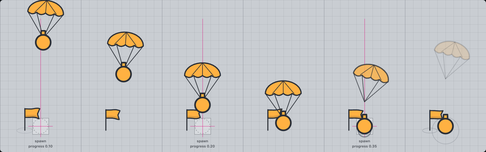
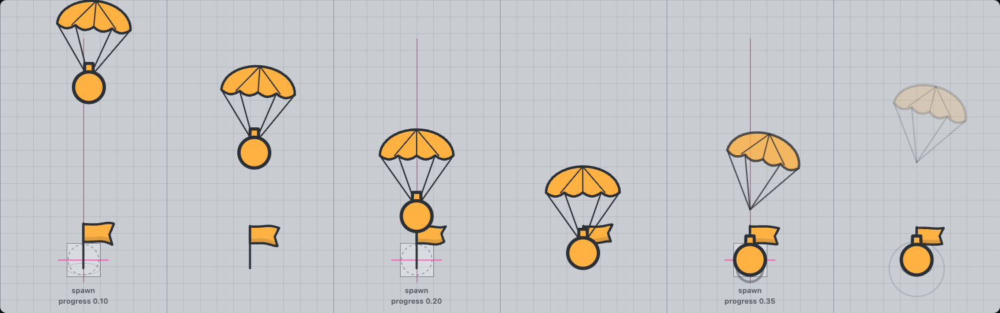
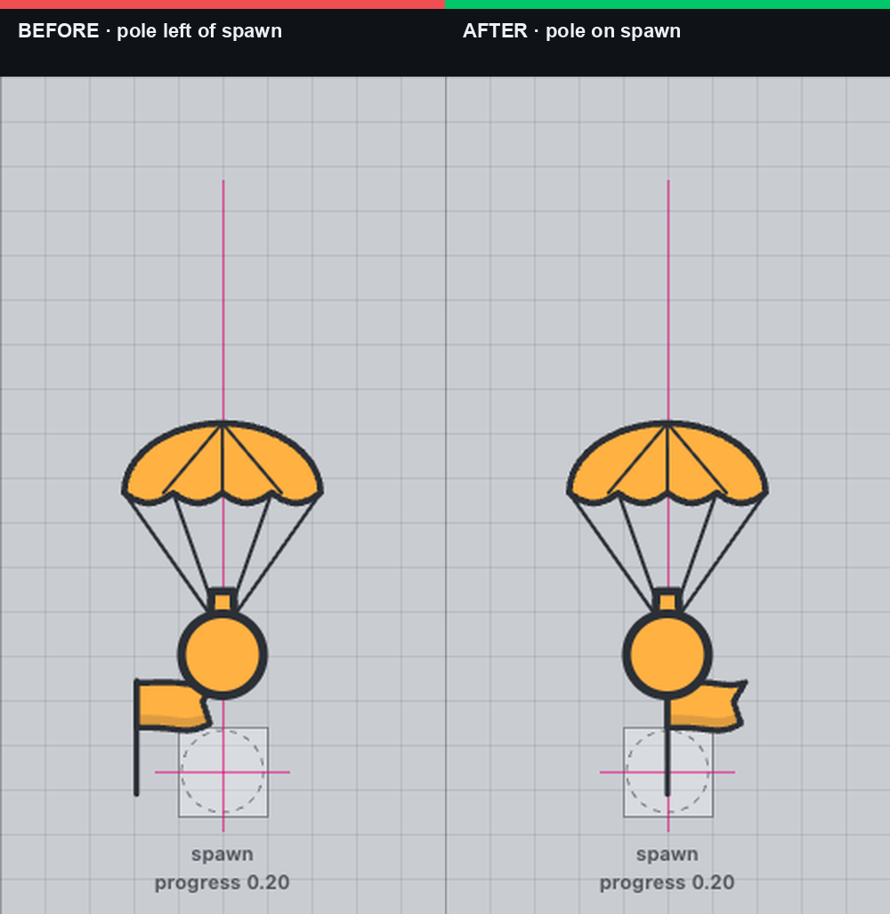

The spawn flag is back on the spawn point
Real drawSpawnTank output. The magenta cross and dashed
hull circle mark the tank's spawn point; the only difference between the
two strips is the pole x. Before: cx - r * 2.1 (≈ 48 px
left, almost the neighbouring cell). After: cx.





